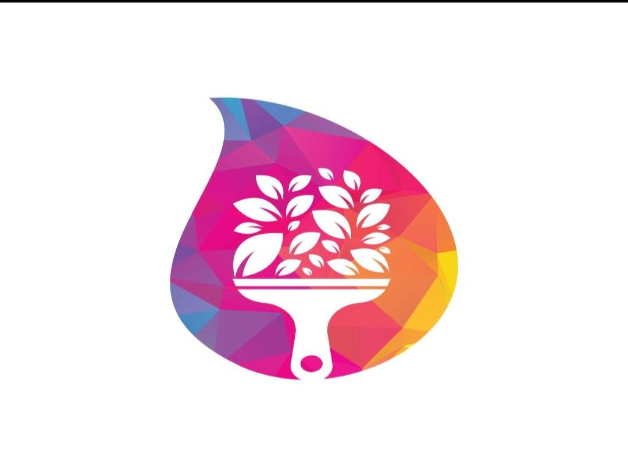
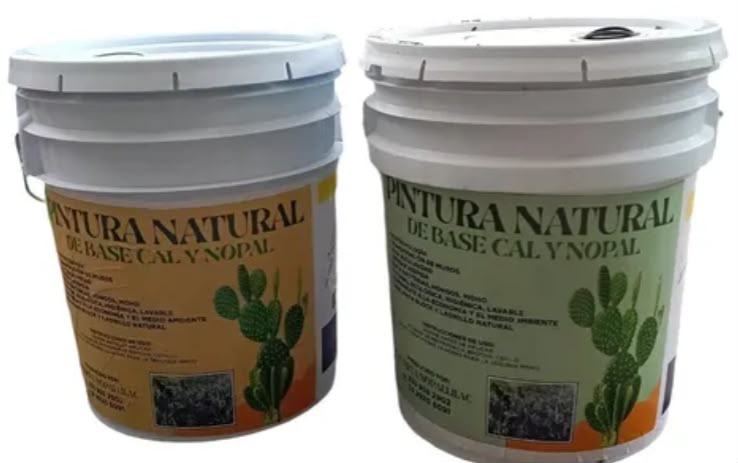
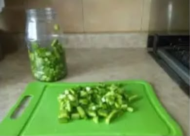
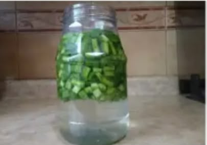
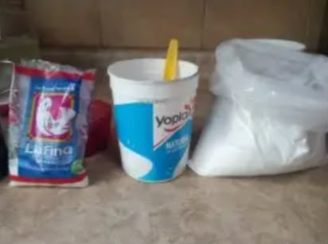
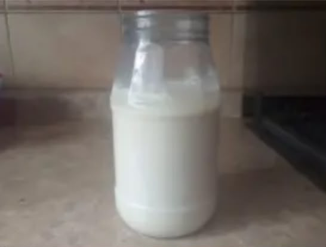
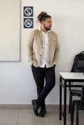

PinturaVegetalPintura elaborada con pigmentos naturales de origen vegetal, ideal para superficies interiores y exteriores. Ofrece un acabado de alta calidad, gran adherencia y un bajo impacto ambiental.
"Pinta hoy, cuida el mañana"

Elaborada con mucílago de nopal, cal y pigmentos naturales. Amigable con el medio ambiente.
Permite la transpiración de los muros sin retener humedad, ideal para todo tipo de superficies (madera, concreto, ladrillo).
No requiere de selladores químicos y ofrece una durabilidad media en exteriores y alta en interiores.
Al descomponerse se convierte en polvo, reduciendo la contaminación. Utiliza merma agrícola de bajo valor comercial.
Pigmentos 100% naturales. Los tonos pueden variar ligeramente según el lote de cosecha.
Verde natural
Amarillo
Terracota
Beige
Azul

1. Picar 3 o 4 nopales gruesos y dejarlos reposar en 2 litros de agua por una noche para que suelten la baba.

2. Al día siguiente, triturar y colar para separar el bagazo de la baba (mucílago).

3. En un bote de 19 litros, mezclar agua, cal y sal. Añadir la baba de nopal (2L de agua por ½L de baba).

4. Revolver bien y dejar reposar una noche. Finalmente, añadir el colorante natural de tu gusto.
La superficie debe estar limpia, seca, libre de polvo, grasa, aceite o residuos. Mezcle bien antes de usar.
Puede aplicarse con brocha, rodillo o pistola de aire. Se recomienda aplicar 2 a 3 capas para un mejor acabado. Entre cada capa, espere de 2 a 4 horas (según condiciones del clima).
Rendimiento: Rinde hasta 10 m² por litro (dependiendo de la superficie).
Secado: Al tacto en 1 a 2 horas. Total: 24 horas.
Mantener fuera del alcance de los niños. No ingerir. Evitar el contacto con los ojos, piel y ropa. Consérvese en un lugar fresco, seco y fuera de la luz solar directa. Una vez abierto el envase, consérvese bien cerrado y utilícese de inmediato.
$10.00 - $25.00 MXN / litro
Materia prima: Cal viva/hidratada, sal gruesa, fijador natural (mucílago de nopal) y pigmentos orgánicos/minerales.
$35.00 - $70.00 MXN / litro
Presentación artesanal / ecológica básica. Aprovechamiento de merma agrícola para reducir costos.
40% - 50% sobre ventas
Rentabilidad ideal para modelos de producción a escala y distribución local en Guanajuato.
Somos 2 jóvenes guanajuatenses iniciando en el mundo del emprendimiento, con la intención de desarrollar ideas innovadoras que contribuyan al cuidado del medio ambiente.

Estudiante de Economía, enfocado en la viabilidad financiera y el impacto de mercado del producto.
Enfocado en la elaboración técnica, la investigación de materiales y el desarrollo sustentable.
Contáctanos para hacer tu pedido o solicitar más información. Contamos con presentaciones de 20L (Rinde aprox. 200m²).
📍 Purísima del Rincón, Guanajuato, México.